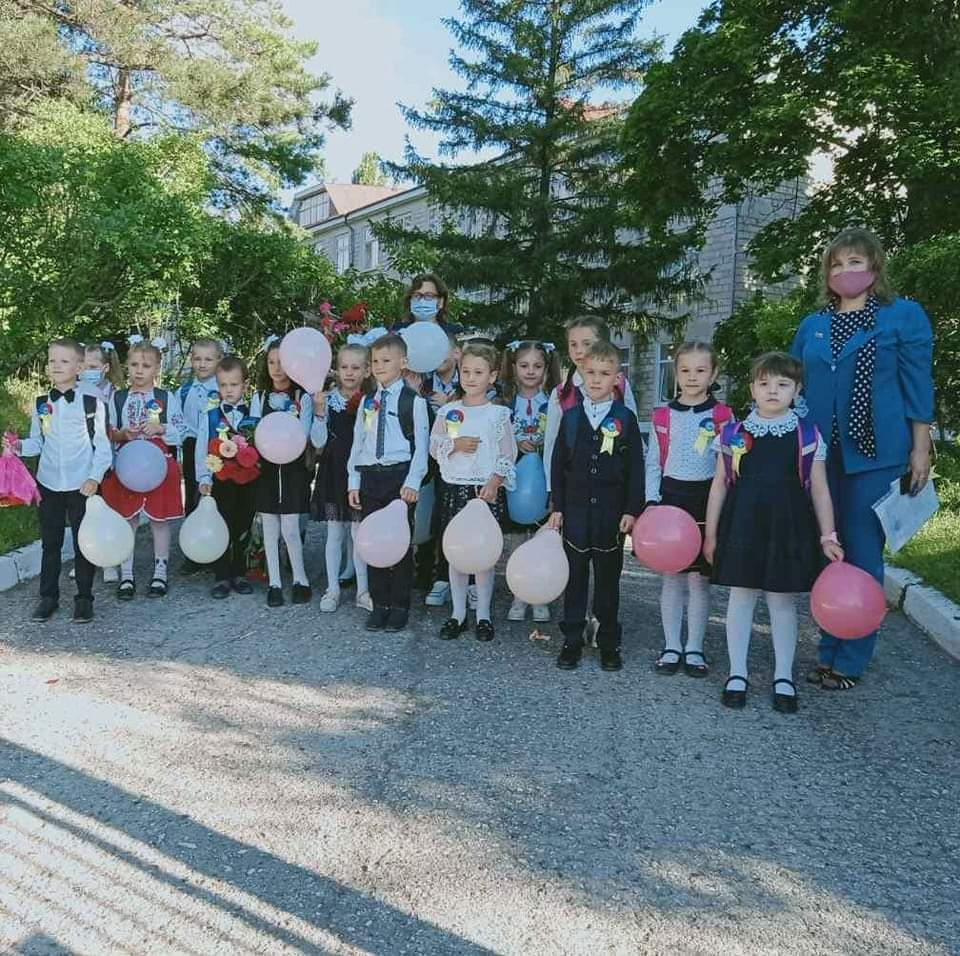
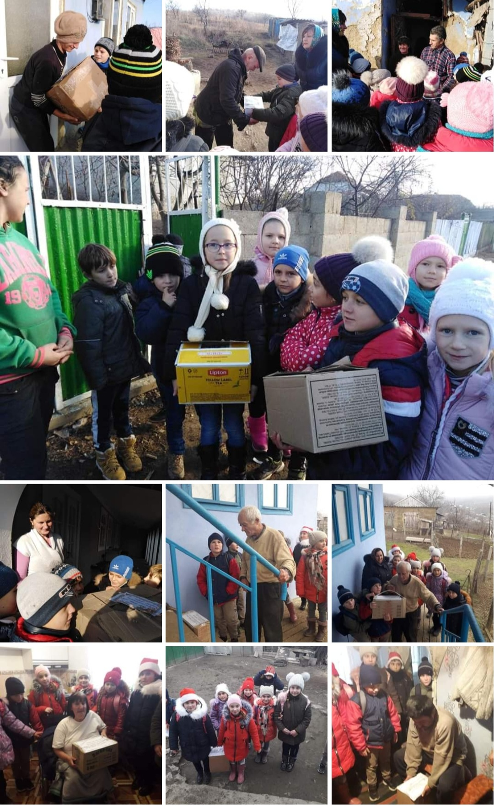
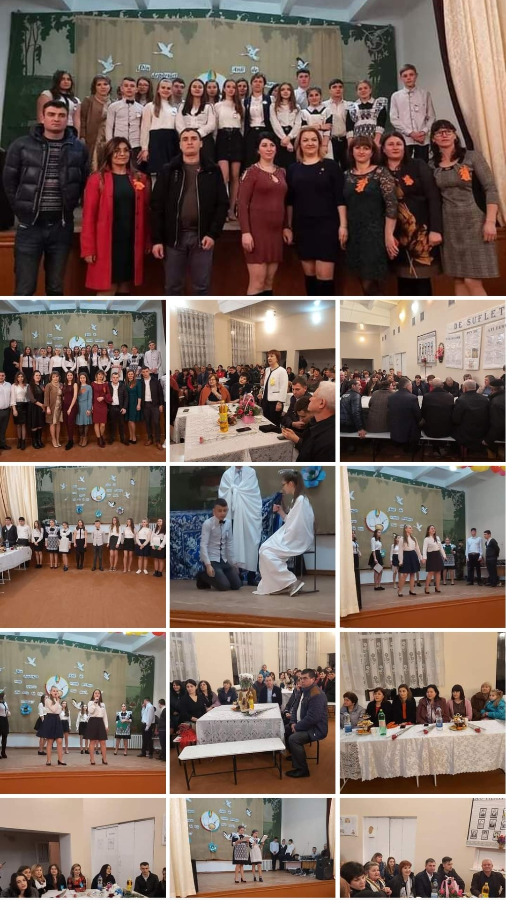
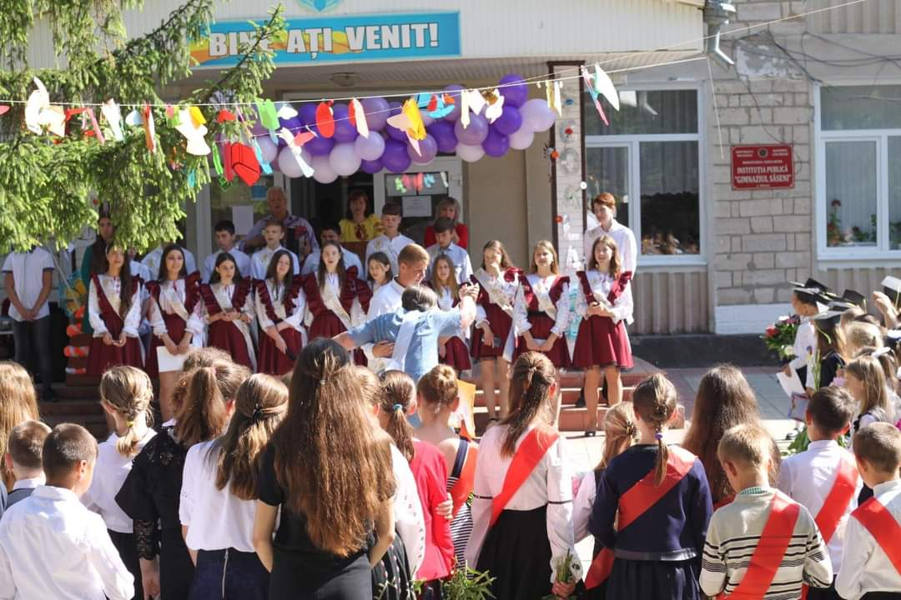

Activități educaționale
1 septembrie
O sărbătoare minunată – începutul anului şcolar, se marchează în fiecare an la la 1 septembrie. Ziua cunoştinţelor este reprezentată tradiţional de primul sunet, primele emoţii, flori şi prima lecţie. Este cea mai asteptată zi pentru cei, care vor păşi pentru prima dată pragul şcolii. Tradiţional în aceasta zi în instituţia noatră se desfăşoară careu festiv, consacrate începutului anului nou de studii. Cu o atenţie deosebită au fost întîmpinaţi eroii principali – elevii claselor 1.
Bostaniada

Bostaniada este o activitate tematică care se organizează în fiecare toamnă în instituția noatră. Elevii împreună cu diriginții și administrația instituției pregătesc o activitate transdisciplinară cu darurile toamnei. Expoziția cuprinde compoziții din diverse fructe, legume și alte lucruri. Tot atunci elevii pregătesc un scenariu alcătuit din cântece, poezii și dansuri.
Voluntariat
Voluntariatul este activitatea desfasurata din proprie initiativa, prin care o persoana fizica îsi ofera timpul, talentele si energia în sprijinul altora fara o recompensa de natura financiara, dar care poate deconta cheltuielile realizate în sprijinul proiectului în care este implicata. Astfel, elevii din instituția noastră se implică în diverse avtivități de voluntaria, ca exemplu: darurile bucuriei, atunci când sunt colectate produse și distribuite persoanelor vulnerabile; sau salubrizarea teritoriului comunității etc.
Întâlnirea cu absolvenții
Întâlnirea cu absolvenții este o activitate deosebită de interceptare a generațiilor, sărbătoare când discipolii au revenit la școală cu recunoștință, cu lacrima dorului și a regretelor, dar, și cu cupa realizărilor și a performanțelor pe care le-au atins datorită cunoștințelor și valorilor acumulate aici, în școală, la izvoarele de înțelepciune și inteligență. Întâlnirea cu absolvenții este o întâlnire a elevilor de acum cu foștii elevi, care au realizat ceva, pentru a avea modele în persoana unor înaintași de-ai lor, care să le spună ce-i așteaptă, cum să reușească în viață. Oaspeții de onoare la eveniment au fost absolvenții generațiilor trecute, însoțiți de profesorii care le-au ghidat calea.
Ultimul sunet
Încheierea anului școlar este o nouă etapă pentru toate generațiile, este un prilej de satisfacție, împlinire și mândrie pentru cele realizate pe parcursul anului de studii - adevărat maraton cu lecții, teste, recreații, teme și activități. Acum și acest an de studii devine istorie. Vă mulțumesc tuturor că ați ținut piept provocărilor acestei perioade și că ați pus umărul ca să o putem depăși. Pentru unii sărbătoarea Ultimului sunet reprezintă începutul unei vacanțe binemeritate, pentru absolvenți însă clopoțelul este vestitorul unei etape de viață foarte importantă atât pentru ei, cât și pentru profesorii care i-au ghidat și părinții care i-au susținut.